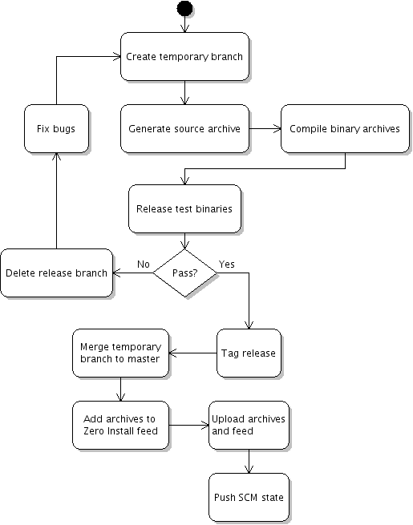

Releases with source and binary packages
0release can be used to create releases of your software from a version control system. The main page described how to make releases of programs which are architecture-independent (e.g. programs written in Python) where a single package is produced. This page explains what happens for programs which must be compiled for different architectures (e.g. C programs).
The extended release process looks like this:

TODO: 0release doesn't currently unit-test the binaries it produces
After generating an archive and a feed for the source code release candidate (where arch='*-src'), 0release also compiles a binary for the host system (using 0compile). It uploads both the source and binary archive and publishes both in the Zero Install feed.
For an example of a simple binary package that works this way, have a look at the c-prog.tgz package in 0release's tests directory:
$ tar xzf c-prog.tgz
$ mkdir release-c-prog
$ cd release-c-prog
$ 0launch http://0install.net/2007/interfaces/0release.xml ../c-prog/c-prog.xml
Compiling on multiple systems
To build binaries for multiple architectures, you'll need to create a configuration file listing the available builders. 0release uses the Base Directory Specification to find its configuration files; with the default settings, you need to create the file ~/.config/0install.net/0release/builders.conf.
The builders.conf file has a [global] section listing the builders to use, followed by one section for each builder. Each builder can have three commands specified: one to start the builder (optional), one the actually do the build, and one to shutdown the builder (optional). Here is an example configuration:
[global]
builders = host, freebsd
[builder-host]
build = 0launch http://0install.net/2007/interfaces/0release.xml --build-slave "$@"
[builder-precise32]
build = build-on-vm precise32-build-slave
This defines two builders named host and precise32. host simply runs 0release in build-slave mode on the local machine (in fact, you don't need to specify this section because it exists by default). The precise32 builder run a script (see below) to bring up a VirtualBox virtual machine, submit the build to it, and then shut it down again.
The build command
The build command is called with four arguments:
- The name of the generated XML feed file for the source release candidate.
- The name of the generated source archive.
- The URL of the directory where the release will be hosted eventually.
- The name of the binary feed to be generated.
The three names are of files in the current directory without the directory part; this simplifies the copying. The build command must do three things:
- Copy the input files (the source feed and archive) to the build system.
- Invoke
0release --build-slaveto do the build. - Copy the results (the binary feed and archive) back to the local system.
Setting up a Vagrant build slave
First, we'll need to create a "box" with the build system. Create a Vagrantfile for the new box, e.g.
Vagrant::Config.run do |config|
config.vm.box = "precise32"
config.vm.box_url = "http://files.vagrantup.com/precise32.box"
end
The bring the machine up and install the basic build environment. The only package required by 0release is 0install itself, but you must also install any system packages that are needed by the software to be built (i.e. those which can't be installed by 0install automatically):
$ vagrant up
$ vagrant ssh -c 'sudo apt-get update &&
sudo apt-get install -y zeroinstall-injector build-essential &&
mkdir -p ~vagrant/.cache/0install.net'
Now package the VM into a new box and add it. You might wish to create a Vagrantfile.pkg to enable a shared 0install cache (see Virtual Machines / Vagrant).
$ vagrant package --vagrantfile Vagrantfile.pkg
$ vagrant box add precise32-build-slave package.box
Create the build-on-vm script, make it executable, and place it in your $PATH (on the host):
#!/bin/bash
set -eux
if `[ -f Vagrantfile \]; then
vagrant destroy -f && rm Vagrantfile
fi
vagrant init "$1"
shift
vagrant up
vagrant ssh-config > .ssh-config
ssh -F .ssh-config default \
'cd /vagrant && 0launch --not-before 0.10 \
http://0install.net/2007/interfaces/0release.xml \
--build-slave "$@"' "$@" && \
vagrant destroy -f && rm Vagrantfile
You can then use it in your builders.conf, as above.